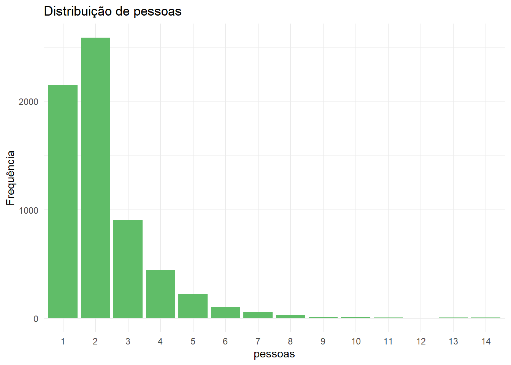
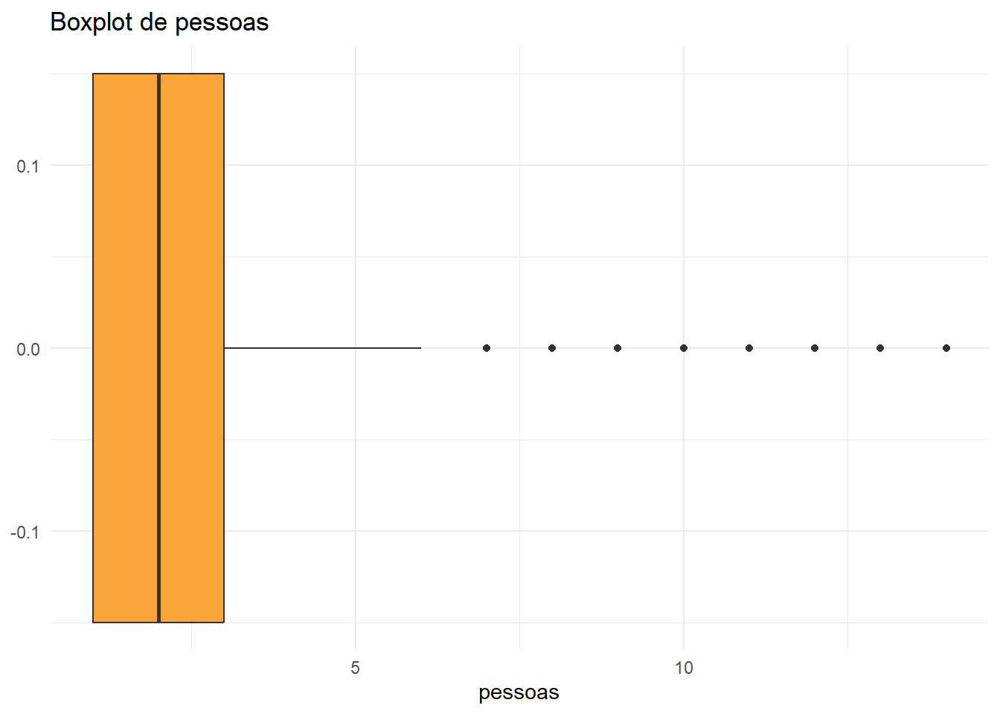
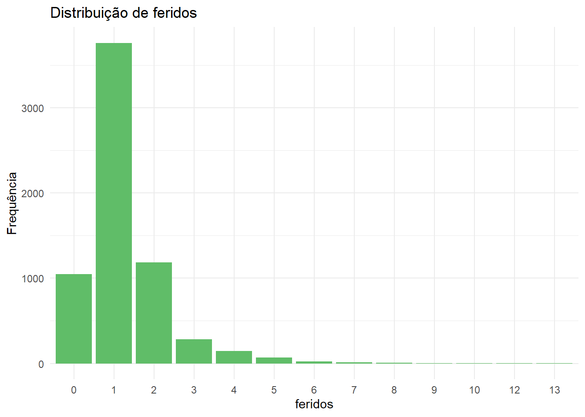
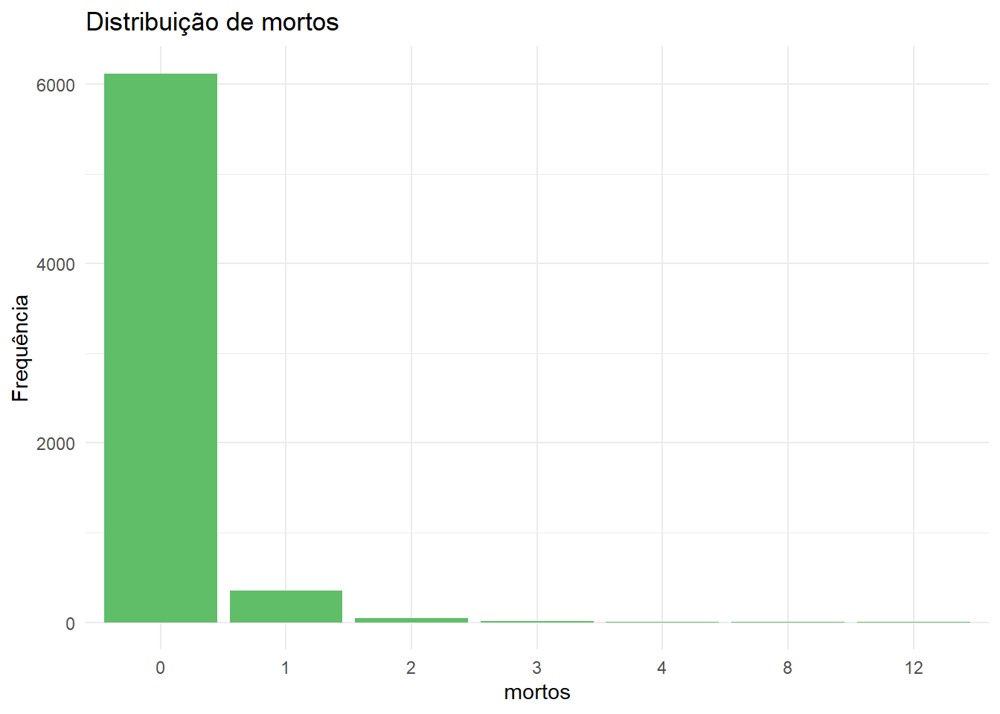
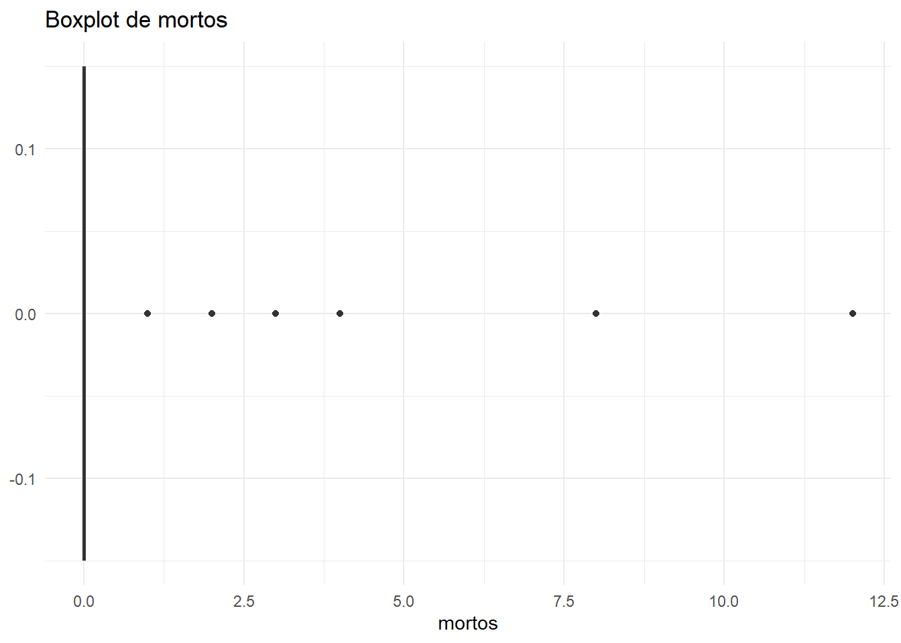
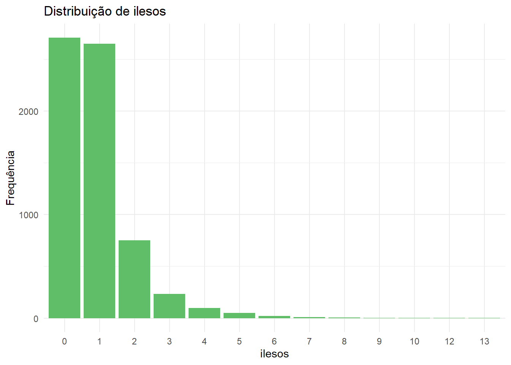
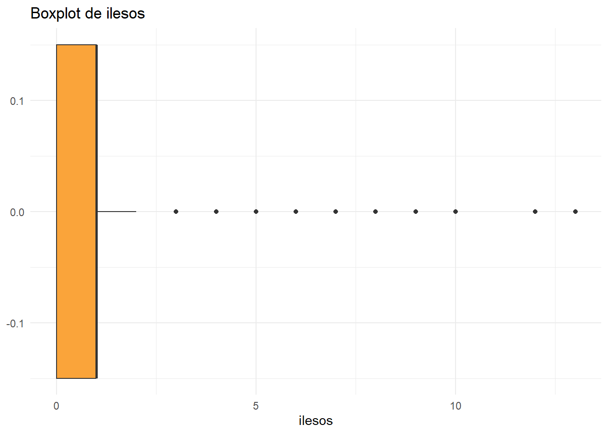
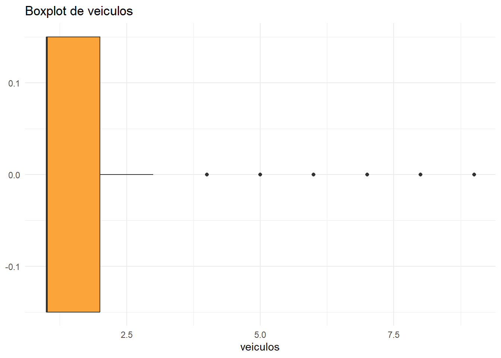
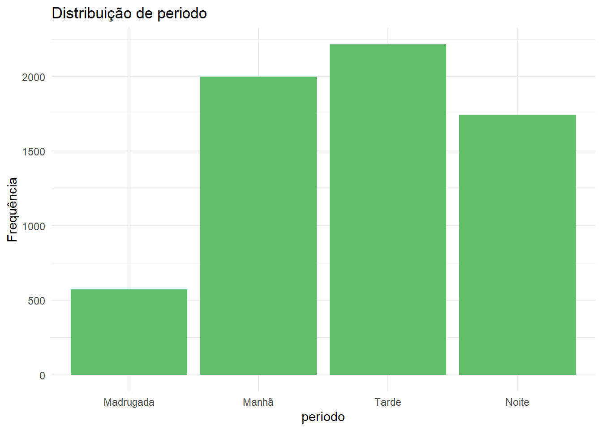

O presente relatório tem como objetivo realizar uma análise descritiva da base de dados de acidentes rodoviários registrados em Minas Gerais no ano de 2020. A análise busca identificar padrões, distribuições e possíveis associações relacionadas aos acidentes, considerando variáveis temporais, espaciais e características dos registros.
Inicialmente, foi realizada uma etapa de tratamento e organização dos dados, envolvendo verificação de inconsistências, padronização das variáveis e criação de novas variáveis auxiliares para facilitar as análises posteriores. Em seguida, foram desenvolvidas análises exploratórias univariadas e bivariadas, utilizando medidas descritivas, tabelas de frequência e representações gráficas.
Além disso, o projeto busca explorar relações entre fatores como período do dia, tipo de acidente, condições meteorológicas e características das rodovias, visando obter uma compreensão mais detalhada do comportamento dos acidentes registrados no estado.
2 Base de dados
2.1 Estrutura da base
2.2 Classificação de variáveis
3 Limpeza e tratamento de dados
3.1 Valores ausentes
3.2 Padronização das variáveis
3.3 Variáveis temporais
3.4 Transformação de variáveis
A variável fase_dia não foi utilizada nas análises exploratórias, pois apresenta informações semelhantes à variável periodo, criada durante a etapa de tratamento dos dados.
A variável periodo foi construída a partir da variável hora, permitindo uma categorização mais padronizada dos horários dos acidentes em madrugada, manhã, tarde e noite.
Dessa forma, optou-se por utilizar apenas a variável periodo nas análises posteriores, evitando redundância nas interpretações.
3.5 Verificação de consistência
4 Análise exploratória
4.1 Análise univariada
4.1.1 Váriáveis numéricas
Pessoas
A variável pessoas representa a quantidade de indivíduos envolvidos em cada acidente registrado. Para compreender sua distribuição, foram utilizadas medidas descritivas e gráficos de distribuição.
analise_numerica(acidentes, "pessoas")
====================
Variável: pessoas
====================
Min. 1st Qu. Median Mean 3rd Qu. Max.
1.00 1.00 2.00 2.23 3.00 14.00
Desvio padrão: 1.445585
Variância: 2.089716
criar_barplot_numerico(acidentes, "pessoas")

criar_boxplot(acidentes, "pessoas")

Observa-se que a maior parte dos acidentes envolve entre uma e três pessoas, indicando concentração dos valores em faixas mais baixas. A mediana igual a 2 demonstra que metade dos acidentes possui até duas pessoas envolvidas, enquanto a outra metade apresenta valores superiores.
Além disso, o boxplot evidencia a presença de diversos valores extremos (outliers), indicando ocorrências menos frequentes com elevado número de pessoas envolvidas.
A proximidade entre média (2,23) e mediana (2) sugere que, apesar da presença de outliers, a distribuição não apresenta assimetria muito acentuada.
Feridos( leves/graves)
As variáveis feridos, feridos_leves e feridos_graves indicam a quantidade de pessoas atingidas nos acidentes e a gravidade dos ferimentos.
analise_numerica(acidentes, "feridos")
====================
Variável: feridos
====================
Min. 1st Qu. Median Mean 3rd Qu. Max.
0.000 1.000 1.000 1.265 2.000 13.000
Desvio padrão: 1.067038
Variância: 1.138571
criar_barplot_numerico(acidentes, "feridos")

criar_boxplot(acidentes, "feridos")
analise_numerica(acidentes, "feridos_leves")
====================
Variável: feridos_leves
====================
Min. 1st Qu. Median Mean 3rd Qu. Max.
0.0000 0.0000 1.0000 0.9826 1.0000 11.0000
Desvio padrão: 0.9840357
Variância: 0.9683262
Em relação à variável feridos, nota-se que a quantidade de pessoas feridas nos acidentes se concentra principalmente entre zero e duas pessoas. A mediana igual a 1 indica que pelo menos metade dos acidentes apresenta até um ferido.
Com base no boxplot, é possível observar a presença de valores extremos (outliers), indicando poucos acidentes com quantidade elevada de feridos.
A variável feridos_leves apresenta concentração em valores baixos, principalmente entre zero e um ferido leve por acidente. Além disso, a proximidade entre média e mediana sugere distribuição relativamente concentrada nos valores centrais.
Já a variável feridos_graves apresenta forte concentração entre zero e um ferido grave, sendo o valor zero o mais frequente. Também é possível observar a presença de diversos valores extremos, indicando acidentes menos frequentes com maior número de feridos graves.
Mortos
A variável mortos indica a quantidade de vítimas fatais nos acidentes.
analise_numerica(acidentes, "mortos")
====================
Variável: mortos
====================
Min. 1st Qu. Median Mean 3rd Qu. Max.
0.00000 0.00000 0.00000 0.07971 0.00000 12.00000
Desvio padrão: 0.3697576
Variância: 0.1367207
criar_barplot_numerico(acidentes, "mortos")

criar_boxplot(acidentes, "mortos")

Ao analisar essa variável, percebe-se que a grande maioria dos acidentes não resultou em vítimas fatais. Entretanto, o boxplot evidencia a presença de valores extremos (outliers), indicando a ocorrência de acidentes mais graves, embora menos frequentes.
Ilesos
A variável ilesos representa a quantidade de pessoas envolvidas nos acidentes que não sofreram ferimentos.
analise_numerica(acidentes, "ilesos")
====================
Variável: ilesos
====================
Min. 1st Qu. Median Mean 3rd Qu. Max.
0.0000 0.0000 1.0000 0.8851 1.0000 13.0000
Desvio padrão: 1.083698
Variância: 1.174401
criar_barplot_numerico(acidentes, "ilesos")

criar_boxplot(acidentes, "ilesos")

Observa-se que, na maior parte dos acidentes, entre zero e uma pessoa saiu ilesa. Além disso, a proximidade entre média e mediana sugere distribuição relativamente simétrica dos dados.
Ao analisar o boxplot, percebe-se também a presença de diversos valores extremos (outliers), indicando acidentes com maior quantidade de pessoas ilesas.
Veículos
A variável veiculos representa a quantidade de veículos envolvidos em cada acidente.
analise_numerica(acidentes, "veiculos")
====================
Variável: veiculos
====================
Min. 1st Qu. Median Mean 3rd Qu. Max.
1.000 1.000 1.000 1.555 2.000 9.000
Desvio padrão: 0.7270478
Variância: 0.5285985
criar_barplot_numerico(acidentes, "veiculos")
criar_boxplot(acidentes, "veiculos")

Ao observar os gráficos e os resumos estatísticos da variável, percebe-se que a maior parte dos acidentes envolveu entre um e dois veículos. A mediana igual a 1 indica que, em pelo menos metade dos acidentes registrados, apenas um veículo estava envolvido.
Além disso, o boxplot evidencia a presença de alguns valores extremos, indicando acidentes com quantidade significativamente maior de veículos envolvidos.
4.1.2 Variáveis categóricas
Condição metereológica
A variável condicao_meteorologica representa as condições climáticas no momento em que o acidente ocorreu.
Observa-se que a maior parte dos acidentes aconteceu em situações de céu claro, totalizando 3.960 ocorrências. Em seguida, destacam-se os acidentes ocorridos em condições de céu nublado, com 1.225 registros.
Por outro lado, condições como nevoeiro ou neblina apresentaram baixa frequência de acidentes, sendo as categorias com menor número de ocorrências na base analisada.
Tipo de pista
A variável tipo_pista indica a configuração da rodovia onde ocorreu o acidente.
Observa-se predominância de acidentes em pistas simples, correspondendo a aproximadamente 51% das ocorrências registradas. Esse resultado sugere maior concentração de acidentes em rodovias com esse tipo de configuração.
Já as pistas múltiplas apresentaram menor frequência de acidentes, totalizando apenas 211 ocorrências.
Período
A variável periodo representa o período do dia em que o acidente ocorreu.
analise_categorica(acidentes,"periodo" )
====================
Variável: periodo
====================
# A tibble: 4 × 3
periodo n porcentagem
<ord> <int> <dbl>
1 Tarde 2218 33.9
2 Manhã 2000 30.6
3 Noite 1746 26.7
4 Madrugada 572 8.75
criar_barplot_numerico(acidentes,"periodo")

Observa-se que a maior parte dos acidentes aconteceu nos períodos da tarde e da manhã. O período da tarde concentrou 2.218 ocorrências, correspondendo a aproximadamente 33,9% dos acidentes, enquanto o período da manhã apresentou 2.000 registros, representando cerca de 30,6% das ocorrências.
Em contrapartida, a madrugada apresentou a menor quantidade de acidentes, com apenas 572 ocorrências, correspondendo a aproximadamente 8,75% do total.
Dia da semana
A variável dia_semana representa o dia da semana em que os acidentes ocorreram.
Observa-se maior concentração de acidentes nos finais de semana e na sexta-feira. O sábado apresentou o maior número de ocorrências, com 1.101 acidentes, correspondendo a aproximadamente 16,9% do total. Em seguida, destacam-se a sexta-feira e o domingo, com aproximadamente 16,2% e 16,1% das ocorrências, respectivamente.
Por outro lado, a terça-feira apresentou a menor frequência de acidentes, com 794 registros, correspondendo a cerca de 12,2% das ocorrências.
Tipo de acidente
A variável tipo_acidente representa a classificação do acidente registrado.
Observa-se predominância de acidentes do tipo saída de leito carroçável, correspondendo a aproximadamente 25% das ocorrências, com 1.682 registros. Em seguida, destacam-se os acidentes do tipo colisão traseira, com 1.066 ocorrências, representando cerca de 16,3% do total.
Já os acidentes do tipo engavetamento apresentaram menor frequência, totalizando apenas 83 ocorrências na base analisada.
BR
A variável br representa a rodovia na qual o acidente ocorreu.
Observa-se que a maior parte dos acidentes ocorreu na BR-381, correspondendo a aproximadamene 30% das ocorrências, com 1948 registros. Já a BR-352 apresenta baixa ocorrência de acidentes, houve apenas uma.
Município
A variável município represenda a cidade onde ocorreu o acidente.
Para essa variável, foi utilizado um gráfico com os dez municípios com maior número de ocorrências de acidentes. Com base no gráfico, observa-se que o município com maior quantidade de acidentes é Betim, com 388 ocorrências. Em contraste, o município com menor incidência entre os dez apresentados é Teófilo Otoni, com 98 acidentes.